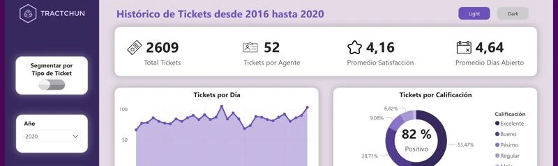

Business Analyst Power BI · Power Query · DAX
Tractchun
97.948tickets de soporte TI analizados
El área de TI quería saber dónde mejorar su servicio. Armé un reporte interactivo con KPIs operativos en DAX (satisfacción, días abiertos, tickets por agente), modelo estrella y filtros por año, mes y agente.